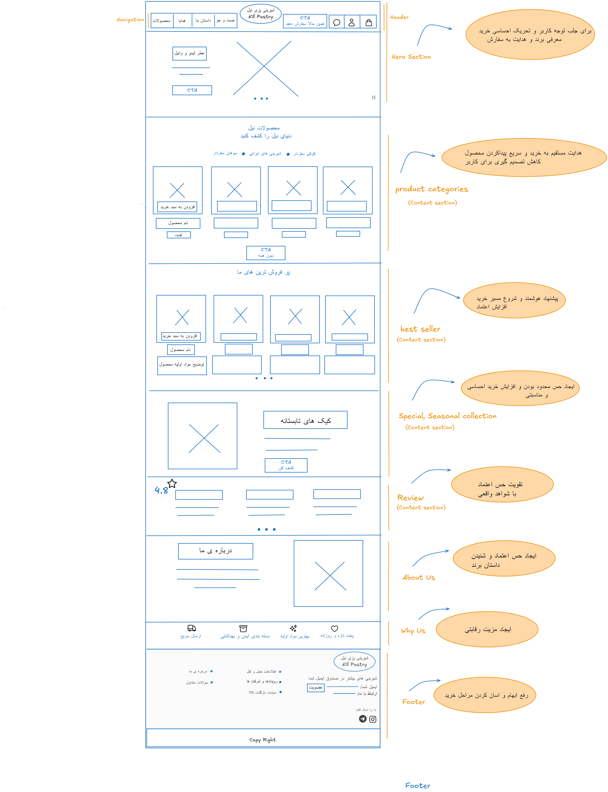

افزایش حس اعتماد در تجربه خرید آنلاین با نشانههای واقعی و انسانی.
کیساستادی UX/UI
نیل — بازطراحی تجربه خرید آنلاین شیرینی خانگی
چگونه با تحقیق واقعی کاربر، مسیر سفارش پراکنده در اینستاگرام را به تجربهای شفافتر، قابلاعتمادتر و قابلپیگیری تبدیل کردم — برای برند شیرینیپزی خانگی نیل در کرج.
نقش من
طراح UX/UI · تحقیق تا وایرفریم
بنیانگذاران
همبنیانگذار برند (دو خواهر)
مدت پروژه
حدود ۶ تا ۸ هفته (اولین پروژه UX)
وضعیت
تحقیق · وایرفریم · UI در Figma

خلاصه اجرایی
نیل یک برند شیرینیپزی خانگی است که فعلاً از طریق اینستاگرام و تلگرام سفارش میگیرد. نبود وبسایت رسمی، ابهام در قیمت و ارسال، و ضعف نشانههای اعتماد باعث میشود بخشی از کاربران قبل از خرید منصرف شوند.
مسئله اصلی
کاربران در طول خرید آنلاین با پیچیدگی و عدم شفافیت مواجهاند و به
یک مسیر خرید سادهتر، قابلپیشبینیتر و قابلاعتمادتر نیاز دارند.
نقش من طراحی تجربه و رابط کاربری این مسیر بود: از همدلی و مصاحبه تا تعریف Insight، پرسونا، Journey Map، ایدهپردازی MVP و وایرفریم صفحه اصلی. پروژه را بهعنوان همبنیانگذار برند و طراح UX/UI پیش بردم — با همکاری مستقیم خواهرم بهعنوان همبنیانگذار کسبوکار.
زمینه برند و مسئله کسبوکار
نیل در کرج فعالیت میکند و به مشتریان کرج و تهران خدمات میدهد. محصولات، شیرینیهای خاطرهانگیز و بااصالت ایرانیاند. ارزشهای برند بر کیفیت، نظم، اعتماد، اصالت ایرانی و طعم بهیادماندنی بنا شدهاند.
آنچه میدانستیم
- سفارشها فقط از اینستاگرام و تلگرام انجام میشود
- وبسایت رسمی وجود ندارد
- ارسال بینشهری (کرج به تهران) دغدغه اصلی است
- اعتمادسازی در اینستاگرام دشوار است و خرید نهایی کاهش مییابد
- نبود سایت رسمی، سفارشگیری شفاف را سخت کرده است
فرضیات اولیه (نیازمند تحقیق)
- اینستاگرامیبودن برند اعتماد کافی ایجاد نمیکند
- نگرانی از ارسال روی تصمیم خرید اثر میگذارد
- نبود مسیر سفارش مشخص باعث سردرگمی میشود
- کاربران مسیر رسمیتر و ساختاریافتهتر میخواهند
اهداف تجربه کاربری
شفافکردن زمان، هزینه و وضعیت ارسال برای کاهش اضطراب خرید.
سادهسازی و شفافسازی گامهای سفارش از کشف تا تحویل.
متریکهای هدف (پس از UI و لانچ)
- کاهش انصراف در مرحلهٔ اعتماد / دایرکت قبل از ثبت سفارش
- افزایش وضوح قیمت و زمان تحویل پیش از خرید
- کاهش اضطراب پس از پرداخت از طریق پیگیری وضعیت سفارش
تحقیق کاربر
برای عبور از حدس به شواهد، ۵ مصاحبه واقعی انجام شد. تمرکز مصاحبهها بر فهم رفتار بود، نه نظرخواهی سطحی — با محورهای اعتماد، تصمیم خرید، تجربه سفارش آنلاین، ارسال و انگیزههای احساسی.
انواع کاربر (پیش از تحلیل)
- خریداران مناسبتی — تولد، مهمانی، نوروز؛ اهمیت ظاهر، کیفیت و رسیدن بهموقع
- خریداران هدیه — حساس به بستهبندی شیک و خاص
- خریداران احساسی — بهدنبال حس نوستالژیک و داستان برند
- خریداران اینستاگرامی — دغدغه اصلیشان اعتماد است
نمونه سؤالهای مصاحبه (رفتارمحور)
سؤالها از دل مسئله، فرضیات و گونههای کاربری استخراج شدند تا رفتار واقعی مشخص شود، نه ترجیح سطحی.
اعتماد
- وقتی وارد یک پیج میشوی معمولاً چه چیزهایی را بررسی میکنی؟
- چه چیزهایی باعث میشود احساس کنی این برند قابلاعتماد است؟
- آخرین باری که از خرید آنلاین شیرینی منصرف شدی، دلیلش چه بود؟
تصمیم خرید
- معمولاً وقتی میخواهی شیرینی سفارش بدهی، اولین قدمت چیست؟
- چه لحظهای در خرید باعث میشود تصمیمگیری برایت سخت شود؟
- چه عواملی برای انتخاب یک برند برایت مهمتر است؟
ارسال و ریسک
- در ارسال شیرینی چه چیزی برایت مهم است؟
- اگر سفارش از شهر دیگری باشد، چه نگرانیهایی داری؟
- تا حالا بهخاطر هزینه ارسال از خرید منصرف شدهای؟
انگیزه و انتظار
- بیشتر برای چه موقعیتهایی شیرینی سفارش میدهی؟
- برایت مهم است شیرینی حس خانگی داشته باشد یا برند؟
- اگر بخواهی تجربه خرید آنلاین را بهتر کنی، چه چیزی کم است؟
۵ مصاحبه واقعی
دستهبندی مخاطب
تحلیل الگوها
بررسی کامنت اینستاگرام (اختیاری)
۱۰ Insight کلیدی
الگوهای استخراجشده از مصاحبهها، فرضیات اولیه را تأیید و عمیقتر کردند. این Insightها پایهٔ تعریف مسئله، HMW و ایدههای MVP شدند.
کاربران قبل از خرید نمیتوانند کیفیت را لمس کنند؛ بنابراین به نشانههای واقعیبودن، هویت انسانی، پشتصحنه و داستان برند تکیه میکنند.
پست و استوری مداوم، حس زندهبودن کسبوکار را منتقل میکند و اعتماد اولیه را بالا میبرد.
کیفیت پاسخ در دایرکت، اولین نقطه ارزیابی حرفهایبودن برند در غیاب ارتباط حضوری است.
بخش بزرگی از اضطراب، از نداشتن دید و کنترل روی فرآیند سفارش میآید.
پاسخ دیرهنگام (بیش از حدود ۶۰ دقیقه) حس پشتیبانی ضعیف در آینده ایجاد میکند.
نبود قیمت فقط کمبود اطلاعات نیست؛ از نظر کاربر پنهانکاری و افزایش ریسک است.
شیرینی برای بسیاری، بخشی از مناسبت یا هدیه است؛ نحوه ارائه به اندازه خود محصول اهمیت دارد.
کاربران بهدنبال حس خانگی و نوستالژیاند؛ برندهایی که این حس را منتقل کنند، ارتباط عمیقتری میسازند.
کاربران هزینه را جداگانه نمیسنجند؛ ارزش کلی تجربه (کیفیت + ظاهر + هزینه) را ارزیابی میکنند.
اعتماد بعد از پرداخت تمام نمیشود؛ پیگیری، تحویل و واکنش به مشکل تعیین میکند خرید مجدد رخ بدهد یا نه.
پرسوناهای نهایی
از چهار نوع کاربر اولیه، دو پرسونای تصمیمساز نهایی استخراج شد که تنش اصلی تجربه را نمایندگی میکنند: اعتماد و کنترل.
پرسونا ۱ — خریدار اعتمادمحور
انگیزه اصلیچون کیفیت را قبل از خرید لمس نمیکند، به نشانههای واقعیبودن برند برای کاهش ریسک نیاز دارد.
هدفخریدی مطمئن از جهت واقعیبودن و کیفیت بالا
رفتار- بررسی واقعیبودن عکسها
- دیدن پشتصحنه و کارگاه
- بررسی هویت انسانی برند
- توجه به Social Proof و پاسخ دایرکت
تصاویر غیرواقعی / AI و نبود چهره انسانی برند
نقش در تصمیماگر اعتماد شکل نگیرد، خرید متوقف میشود.
پرسونا ۲ — خریدار محتاط
انگیزه اصلیچون خرید آنلاین غیرقابلپیشبینی است، بهدنبال کنترل و شفافیت حداکثری است.
هدفاطمینان از زمان تحویل، وضعیت سفارش و کاهش استرس بعد از پرداخت
رفتار- جستوجوی قیمت در پستها
- بررسی زمان تحویل و بستهبندی
- حساسیت به سرعت پاسخگویی
سکوت بعد از پرداخت، ندانستن وضعیت سفارش، پاسخ دیرهنگام
نقش در تصمیماگر فرآیند قابلپیشبینی نباشد، منصرف میشود.
نقشه سفر کاربر (وضعیت فعلی)
Journey Map مسیر As-Is خرید از اینستاگرام را نشان میدهد: از کشف تا تحویل — همراه با نقاط درد و فرصتهای طراحی.
۱. کشف (Discovery)
کنجکاوی · امید⚠️ محتوای نامنظم باعث خروج سریع میشود — اولین تأثیر حیاتی است.
✦ فرصت: Behind the Scenes + چهره واقعی + Social Proof
۲. اعتماد (Trust)
تردید⚠️ عکس غیرواقعی، نبود قیمت، نبود Social Proof و هویت انسانی سرد.
✦ فرصت: هایلایت مشتریان + قیمت شفاف + پشتصحنه واقعی
۳. تصمیم (Decision)
گیجی احتمالی⚠️ دایرکت زمانبر؛ انتظار بیش از ۶۰ دقیقه منجر به انصراف میشود.
✦ فرصت: مراحل واضح سفارش + پنجره زمانی دقیق تحویل
۴. بعد از پرداخت
اضطراب⚠️ سکوت بعد از پرداخت و از دست رفتن حس کنترل.
✦ فرصت: Order Tracking + پیشنمایش بستهبندی قبل از ارسال
۵. تحویل و احساس نهایی
رضایت یا ناامیدی⚠️ تأخیر یا آسیب محصول میتواند به خروج دائمی منجر شود.
✦ فرصت: ضمانت تحویل + ارتقای تجربه احساسی دریافت (آینده)
جریان کاربری فعلی (User Flow)
مسیر خرید فعلی کاملاً متکی به دایرکت اینستاگرام است:
- ۱ورود به پیج
- ۲دیدن پست / استوری محصول
- ۳بررسی اعتماد (عکس، پشتصحنه، نظرات)
- ۴تصمیم به خرید
- ۵پیام در دایرکت
- ۶دریافت قیمت و زمان تحویل
- ۷ثبت سفارش
- ۸دریافت پیام تأیید
- ۹انتظار و پیگیری وضعیت
- ۱۰دریافت محصول و تجربه نهایی
فرصت طراحی
وبسایت باید نقاط اصطکاک همین جریان را کم کند: قیمت از ابتدا پیدا
باشد، مراحل سفارش واضح باشد، و بعد از پرداخت کاربر در تاریکی نماند.
How Might We و ایدهپردازی
سؤالهای HMW پل بین Insight و راهحل بودند. ایدهها به دو دسته MVP (قابلاجرا همین حالا) و Future تقسیم شدند.
چطور نشانههای واقعیبودن برند را در نقاط تصمیمگیری واضح کنیم؟
چطور قبل از خرید، اطمینان کاربر به واقعیبودن برند را بالا ببریم؟
چطور قیمت، زمان تحویل و فرآیند سفارش را پیش از خرید شفاف کنیم؟
چطور اضطراب بعد از پرداخت را با پیگیری وضعیت سفارش کم کنیم؟
چطور دریافت محصول را به تجربهای احساسی و مناسبتی تبدیل کنیم؟
اعتماد
- عکس و استوری رضایت مشتری MVP
- ویدیو پشتصحنه پخت و بستهبندی MVP
- نمایش چهره واقعی بنیانگذاران MVP
- نمایش مراحل سفارش تا تحویل MVP
- نشان ارسال موفق کرج به تهران آینده
کاهش ریسک
- پیگیری ساده سفارش (دایرکت / تلگرام) MVP
- اعلام تاریخ دقیق بهجای بازه مبهم MVP
- عکس بستهبندی نهایی قبل از ارسال MVP
- ضمانت تأخیر / آسیب محصول MVP
احساس و مناسبت
- حالت پیشنمایش هدیه و کارت پیام آینده
- تقویت داستان برند و حس خانگی در محتوا MVP
طراحی: وایرفریم و UI نهایی
بر اساس Insightها، ساختار صفحه اصلی طوری چیده شد که از لحظه ورود، اعتماد و شفافیت را بسازد — نه اینکه فقط کاتالوگ محصول باشد.
- Hero — معرفی برند و وعده تجربه (اصالت + اعتماد)
- دستهبندی و پرفروشها — کاهش سردرگمی انتخاب
- کالکشن ویژه — پشتیبانی از انگیزه مناسبتی / هدیه
- نظرات — Social Proof برای پرسونای اعتمادمحور
- درباره ما و چرا ما — هویت انسانی و پشتصحنه برند
- Footer — دسترسی سریع به سفارش، ارسال و تماس
UI نهایی با تصاویر واقعی محصول در Figma آماده شده است.
نتیجه فعلی و گامهای بعدی
تا این مرحله، مسئله کسبوکار به یافتههای قابلاستناد کاربر وصل شده و مسیر طراحی از تحقیق تا وایرفریم و UI نهایی در Figma شفاف است. پروتوتایپ تعاملی و تست کاربردپذیری گامهای بعدیاند.
تحقیق و Insight
پرسونا و Journey
HMW و ایدههای MVP
وایرفریم Homepage
UI نهایی در Figma
پروتوتایپ و تست
مایلید درباره این پروژه صحبت کنیم؟
آماده ارائه جزئیات تحقیق، تصمیمهای طراحی و مسیر بعدی هستم.